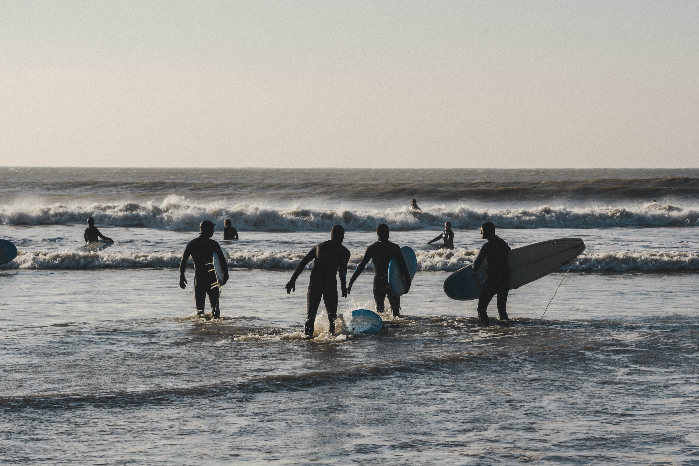

All About TopSail
About Us
Our Town Hall!
820 S. Anderson Blvd., Topsail Beach, NC 28445
Phone: 910-328-5841 | Fax: 910-328-1560
Topsail, North Carolina, is a hidden gem nestled along the southeastern coast, characterized by its unspoiled beauty, welcoming community, and rich maritime history. This charming beach town offers an authentic seaside experience that feels like a step back in time. With its miles of soft, sandy beaches, it serves as a haven for beachcombers, sun-seekers, and nature enthusiasts alike. The area's tranquil ambiance is complemented by a vibrant array of marine life, making it a prime spot for dolphin watching and turtle nesting during the warmer months.

For those with a taste for adventure, Topsail's crystal-clear waters offer an exhilarating playground. Glide through the gentle waves on a kayaking expedition, exploring hidden coves and taking in the breathtaking coastal views. Experience the thrill of stand-up paddleboarding, mastering the art of balance while immersing yourself in the tranquility of the ocean. Alternatively, embark on an action-packed jet-ski ride, feeling the rush of the wind against your skin as you zoom across the sparkling water surface.
Fishing enthusiasts are in for a treat with Topsail's abundant fishing opportunities. Cast your line off the charming piers, where the camaraderie among fellow anglers adds to the coastal charm. Alternatively, set sail on a deep-sea fishing excursion, venturing into the heart of the ocean to reel in a variety of local species. Whether you're an experienced angler or a novice seeking a new hobby, Topsail Beach promises an unforgettable fishing experience that will leave you hooked.
While the natural beauty of Topsail Beach undoubtedly captivates, the town also boasts a rich cultural tapestry woven with the threads of its intriguing past. Immerse yourself in the historical fabric of the region by exploring the various local museums and historical sites that offer a glimpse into Topsail's vibrant heritage. Discover the captivating tales of the town's pirate history, where legends of buried treasures and swashbuckling adventures come to life. Uncover the secrets of the past through interactive exhibits and engaging narratives that transport you back in time. Marvel at the remnants of old shipwrecks and artifacts, each carrying a story of its own and contributing to the captivating narrative of Topsail Beach.
Engage with the local community and witness the vibrant traditions that have shaped the identity of the town. From lively cultural festivals celebrating the town's heritage to art galleries showcasing the works of local artisans, Topsail Beach invites you to immerse yourself in a world where history and culture intertwine seamlessly, creating an enriching experience for all who visit

Embrace the warmth and hospitality of the Topsail Beach community as you explore the town's vibrant array of local shops, restaurants, and galleries. Stroll through the charming streets, where the inviting scent of freshly caught seafood and the sounds of laughter emanating from local eateries welcome you with open arms. Indulge in the delectable flavors of the sea, savoring each bite of succulent seafood crafted by talented local chefs who infuse their dishes with the essence of coastal living.Discover the unique treasures tucked away in the quaint boutiques and art galleries, each offering a glimpse into the creative pulse of the town. Engage with local artisans and craftsmen, and immerse yourself in the vibrant arts and culture scene that thrives within the heart of Topsail. From handcrafted souvenirs and intricate jewelry to captivating artworks that capture the essence of the coast, Topsail's local establishments invite you to take a piece of the town's spirit home with you.
Unwind in the laid-back coastal lifestyle, where time slows down and each moment is savored. Whether you are seeking a leisurely afternoon exploring the town's charming nooks or a relaxing evening spent savoring a delectable meal against the backdrop of a breathtaking sunset, Topsail Beach offers a perfect blend of tranquility and coastal charm. Immerse yourself in the gentle rhythms of the ocean, and allow the town's captivating ambiance to leave an indelible mark on your soul, beckoning you to return time and time again.